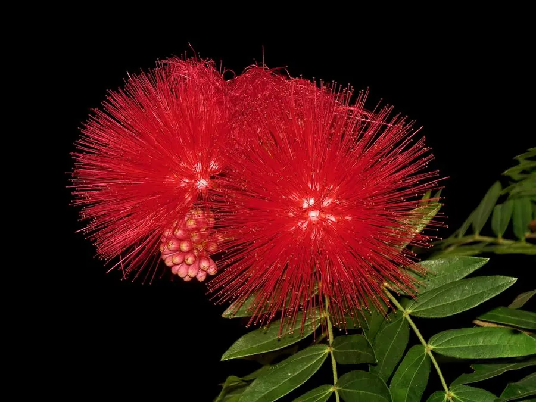

花卉与草本 · 植物界
朱缨花 Calliandra haematocephala

豆科朱缨花属常绿灌木，花丝鲜红细长、聚成绒球状，盛花时满枝红球，是南方庭园中极具辨识度的观花灌木。
- 分类
- 门被子植物门纲木兰纲目豆目科豆科属朱缨花属
- 栖息环境
- 热带亚热带庭院与绿地，喜高温湿润、阳光充足
- 地理分布
- 原产玻利维亚、巴西；中国广东、广西、福建、海南、云南、台湾栽培
- 保护级别
- 暂无评估；中国未列入国家重点保护野生植物名录
物种志
朱缨花为豆科朱缨花属常绿灌木，高可达两至三米，树皮灰褐色，分枝开展。二回羽状复叶，小叶卵状披针形，表面深绿。花组成头状花序，花丝鲜红色、细长而密集，聚成绒球状，形似红缨，花期八月至翌年一月；荚果扁平、线形，成熟时褐色开裂，果期秋冬季。
朱缨花原产玻利维亚、巴西等南美洲国家，中国广东、广西、福建、海南、云南、台湾等地有栽培。它喜高温湿润和充足阳光，不耐寒，适宜疏松肥沃、排水良好的酸性土壤。花丝鲜红、形似绒球，盛开时满树红球，是南方庭园和道路绿化的优良观花灌木；也可盆栽观赏。花后修剪可促进分枝和下次开花。
形态与习性
- 株高2–3 m，分枝开展
- 花期8 月至翌年 1 月，花丝鲜红
- 果期秋冬季，荚果扁平
- 光照喜光，全日照开花多
- 水分喜湿润，忌积水
- 土壤疏松肥沃的酸性土
- 主要用途庭园观花灌木、盆栽
趣味知识
- 朱缨花那团鲜红的绒球其实是由无数细长的雄蕊组成的，并非花瓣。
- 它的花丝基部白色、上部鲜红，远看像一个个红色绒球挂在枝头。
- 朱缨花原产南美，因花形喜庆，在华南常被用作节庆摆花。